Il menu ThunderPEC
Il menu ThunderPEC
permette la gestione dell'estensione.
E' composto dalle seguenti voci:
- Account:
per la gestione degli account PEC
- Aggiungi:
per aggiungere un nuovo account PEC
- Seleziona:
per abilitare/disabilitare ThunderPEC
sugli account già esistenti
- Cerca PA:
per cercare l'indirizzo PEC di una PA
- PocketPEC:
per l'integrazione con PocketPEC
- Impostazioni:
per accedere alla finestra delle impostazioni
- Condividi/Seguici:
per accedere alla pagina di ThunderPEC per i social network
- Aiuto:
per visualizzare questa guida
- Invia email
al supporto: per inviare un email al supporto di ThunderPEC
- Invia LOG al supporto: attivo se il
debug di ThunderPEC è attivo
- Informazioni
su ThunderPEC: per visualizzare la versione
dell'estensione e ulteriori informazioni aggiuntive
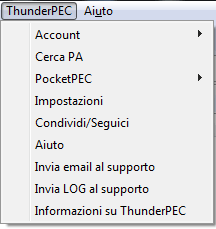
Account
Attraverso
il sottomenu Account è possibile creare un nuovo account PEC
o
abilitare/disabilitare ThunderPEC sugli account di posta
elettronica
esistenti.
Account > Aggiungi
La configurazione di un nuovo account PEC è gestita
attraverso un
wizard che raccoglie le informazioni necessarie.
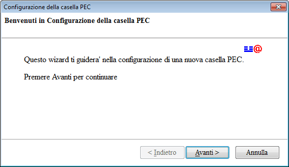
Utilizzando il pulsante Avanti,
si abbandona la schermata di benvenuto per passare alla selezione del
account di posta elettronica certificata.
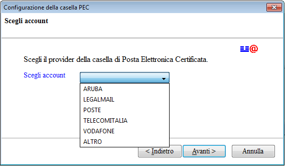
Alcuni
gestori PEC sono preconfigurati in modo da ridurre significativamente
il numero di parametri da inserire. Selezionando la voce ALTRO, il wizard
richiederà tutti i parametri necessari alla
configurazione
della casella di posta elettronica certificata.
La schermata successiva richiede l'inserimento del proprio nome e
cognome che verrà successivamente associato all'indirizzo di
posta
elettronica.
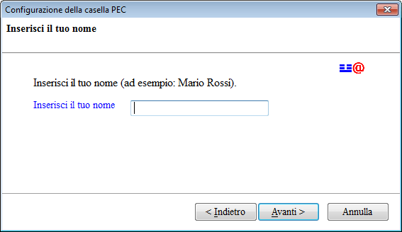
Utilizzando il pulsante Avanti,
si passa all'inserimento del proprio indirizzo di posta elettronica
certificata.
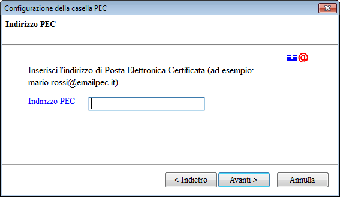
Il passo successivo del wizard richiede di selezionare il tipo di
server della posta in arrivo (questo
passo non è effettuato per i gestori PEC preconfigurati)
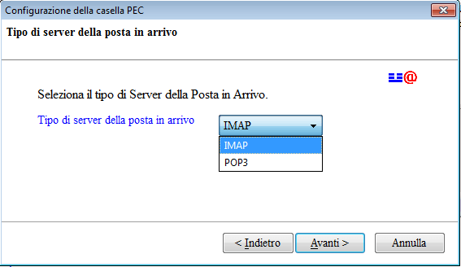
Selezionato il tipo di server per la posta in arrivo, il wizard
richiede i parametri relativi a questo server (questo passo non è effettuato
per i gestori PEC preconfigurati)
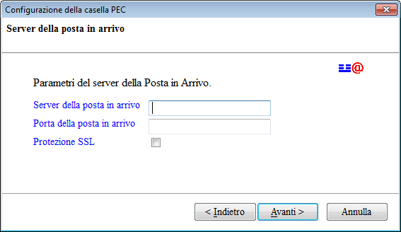
Inseriti i parametri relativi al server della posta in arrivo, inserire
le credenziali di accesso al server di posta in arrivo
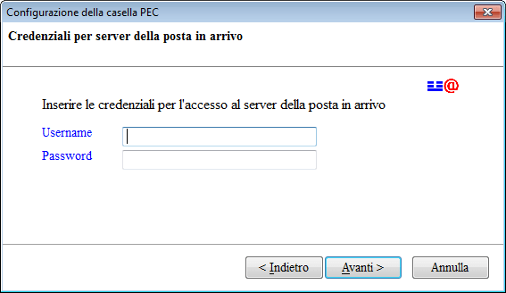
Successivamente, inserire i parametri del server della posta in uscita (questo passo non è effettuato
per i gestori PEC preconfigurati)
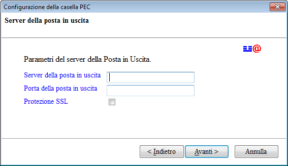
e
le relative credenziali; il wizard propone, come valori di default, le
credenziali immesse per il server della posta in arrivo (questo passo non è effettuato
per i gestori PEC preconfigurati)
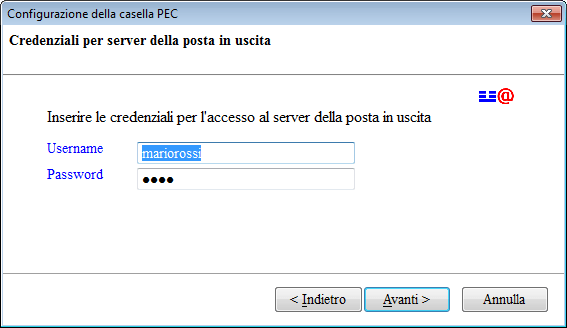
Premendo il pulsante Fine,
ThunderPEC aggiunge la nuova casella
di posta elettronica certificata tra le caselle di posta di Thunderbird.
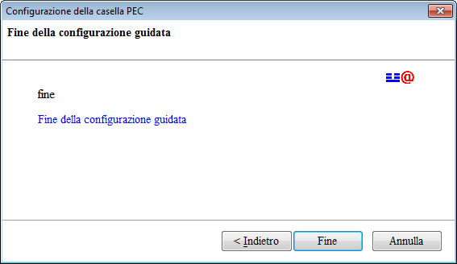
Come
evidenziato da questa guida, il numero di parametri richiesto per la
configurazione di un gestore PEC preconfigurato è limitato a:
- Nome e Cognome
- Indirizzo di posta elettronica certificata
- Credenziali per l'accesso ai server PEC
Account > Seleziona
Nel
caso in cui la casella di posta elettronica certificata sia
già
presente in Thunderbird o si è preferito configurarla
attraverso il
wizard di default presente nel programma, è possibile
abilitare/disabilitare ThunderPEC attraverso questo menu.
Utilizzando
Account > Seleziona, ThunderPEC mostra l'elenco delle
caselle di
posta elettronica (certificata e non) configurate in Thunderbird. Per
abilitare ThunderPEC su di una casella PEC,
selezionare la casella di
controllo corrispondente.
In questo modo le funzionalità offerte da ThunderPEC saranno abilitate sulle
sole caselle di posta prescelte.
PocketPEC
Trasferisci Account
Attraverso
il menu Trasferisci Account è possibile trasferire i dati di
un account
PEC da ThunderPEC a PocketPEC. Questa procedura è
disponibile da lla
versione 1.5.0 di ThunderPEC e dalla versione 1.3.0 di PocketPEC
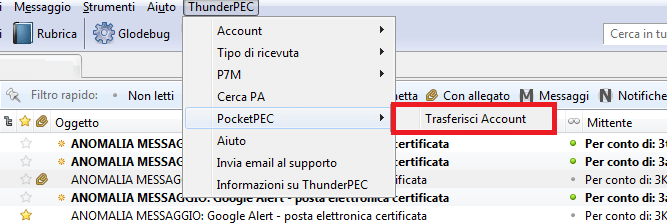
Selezionando
la voce del menu, verrà mostrata una nuova finestra in cui
è necessario
selezionare una delle caselle PEC ed indicare la relativa password
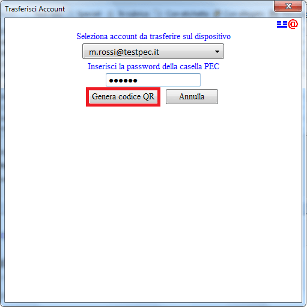
Successivamente, utilizzando il pulsante Genera codice QR,
verrà generato un codice a barre bidimensionale
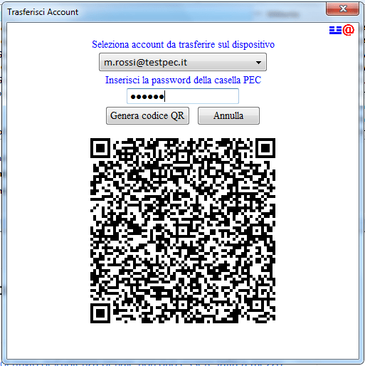
La
restante parte della procedura va eseguita sul palmare. Dalla schermata
principale di PocketPEC, premere il tasto menu e selezionare la voce Aggiungi account.
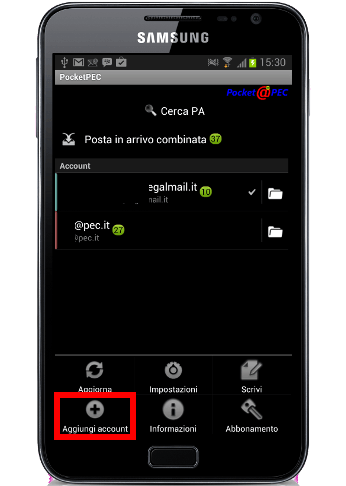
Nella schermata successiva, premere il pulsante QR
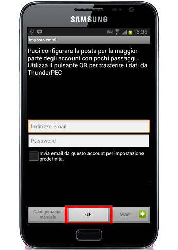
Inquadrare
il codice QR presente all'interno della finestra di ThunderPEC,
avvicinando/allontanando il palmare per facilitare la messa a fuoco.
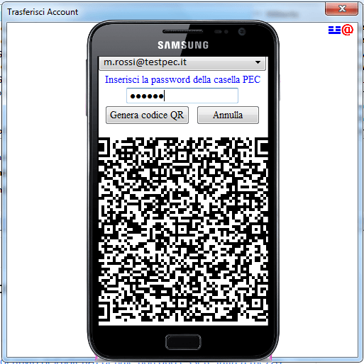
Una volta acquisiti i dati, proseguire con la normale procedura di
configurazione premendo il pulsante Avanti.
Le varie sezioni della procedura di configurazione saranno preimpostate
con i valori importati.
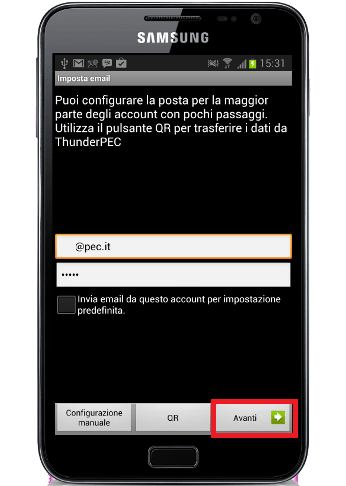
Impostazioni
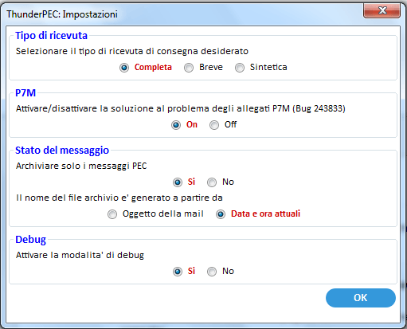
Attraverso la finestra delle impostazioni, è possibile:
Definire il tipo di ricevuta
Le ricevute di avvenuta consegna (rappresentate dai messaggi la cui
intestazione inizia con la parola CONSEGNA)
sono costituite da un messaggio di posta elettronica inviato al
mittente che riporta la data e l’ora di avvenuta consegna, i
dati del
mittente e del destinatario e l’oggetto. La ricevuta di
consegna può
essere:
- Completa:
in questo caso il
messaggio di posta elettronica che costituisce la ricevuta contiene i
dati della transazione, un allegato in formato XML, contenete i dati
sopra riportati, ed l'intero messaggio di posta originale (allegati inclusi)
sotto forma di allegato EML
- Breve:
come la ricevuta di tipo completa ad esclusione degli eventuali
allegati presenti nel messaggio originale
- Sintetica:
contiene solamente i dati di transazione e l'allegato XML
La
normativa PEC prevede, in assenza di indicazioni da parte del client di
posta elettronica, l'utilizzo della ricevuta di consegna di tipo
completa.
Attraverso le impostazioni è possibile impostare il valore
globale di default per tutti i messaggi di posta elettronica in uscita.
Durante la composizione di un messaggio , è possibile
cambiare il tipo di ricevuta desiderato per il singolo messaggio.
Attivare/disattivare la correzione del bug 243833 (P7M)
Attraverso questa impostazione, è possibile
attivare/disattivare la
funzionalità di
correzione del bug 243833 di Thunderbird relativa agli allegati firmati
digitalmente con estensione p7m
La
funzionalità agisce in automatico rendendo visibile
l'allegato p7m. La funzionalità
agisce sia
sulle caselle PEC che sulle caselle di posta elettronica normale e non
dipende dall'abilitazione di ThunderPEC.
Stato del messaggio
In questa sezione, è possibile definire il valore di default
del parametro che limita l'archiviazione ai soli messaggi PEC (eml) e
il nome del file utilizzto durante l'archiviazione (se derivato
dall'oggetto della mail oppure dalla data di archiviazione)
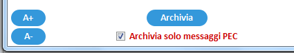
Debug
Per attivare/disattivare il debug di ThundePEC